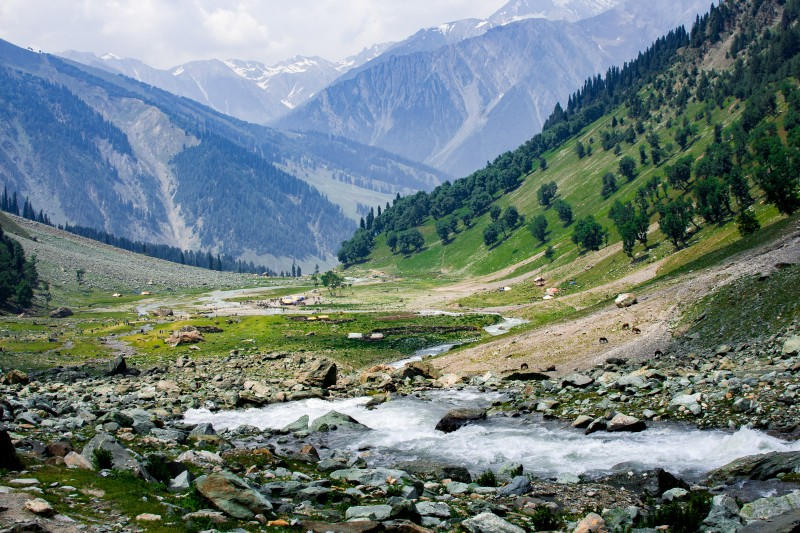

On cloud nine vibe!

Our package
- Price : - On Request
- Tour Location : Shimla
- No Of Days : 3 Night and 4 days
- No Of People : 3+
Day 1
Kullu Manali is one of the attractive hills stations to visit all over the year. It has adventurous activities like river rafting, paragliding, zorbing and skiing. Old Manali, Hidimba Devi Temple, Vashisht Hot Water Springs, Manu Temple, and Mall Road are the attractive place.
Day 2
Sightseeing starts with Solang Valley, Snow Point and Activities in Snow Point. Proceed to Dinner and Overnight stay at hotel
Day 3
Check out from hotel Depart to Vaishno Devi temple and Kullu Rafting.It has adventurous activities like River rafting, Paragliding, Zorbing and Skiing. Depart to Shimla, Proceed to Dinner and Overnight stay at hotel.
Day 4
Check out from hotel, and Shimla Sightseeing starts with Enjoying the world-famous pony ride, Shimla Ridge and Mall Road. Depart to Delhi you will proceed to Delhi Airport to catch your Flight for your onward destination with sweet holiday Memories.
Package Inclusion:
- Pickup & Drop off.
- Accommodation in 3-star Resort.
- Sightseeing based on itinerary.
- Food: MAP Plan.
- Manali Local Vehicle.
- All Parking and Permit Charges.
Package Exclusion:
- Train Fare.
- Other Personal Expenses.
- Entry fee for any place of visit.
- Sightseeing which is not mentioned in the Package.
- Extra Food / Charges for which is not mentioned above the Package.
- unavoidable circumstances or natural calamities, itineraries may be changed or reversed; however, all inclusions in the itinerary will remain the same.